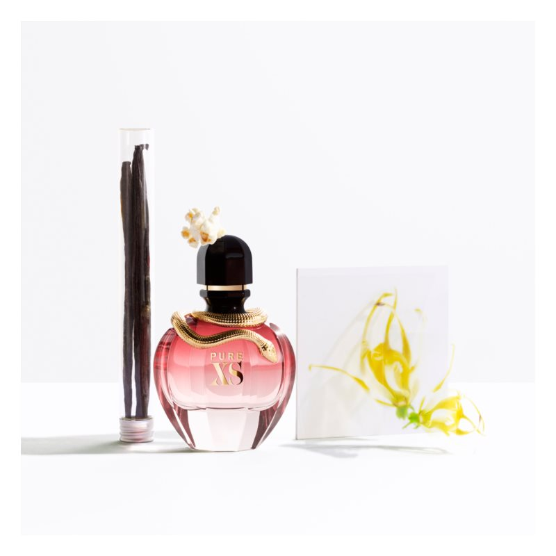

| Note de varf | VANILIE, MOSC ALB |
| Note de inima | AMBRETTE, POPCORN |
| Note de baza | LEMN DE SANTAL, YLANG-YLANG |
| Grupe de parfumuri | ORIENTALE, FLORALE |
Apa de parfum Paco Rabanne Pure XS For Her creează în jurul care o folosește o aură de atracție, care o face irezistibilă. Parfumul a fost lansat în anul 2018, iar muza sa a devenit fotomodelul Emily Ratajkowski. De menționat și flaconul roz și elegant, cu un șarpe auriu încolăcit în jurul gâtului. Designul original al flaconului amplifică senzualitatea și forța apei de parfum.
